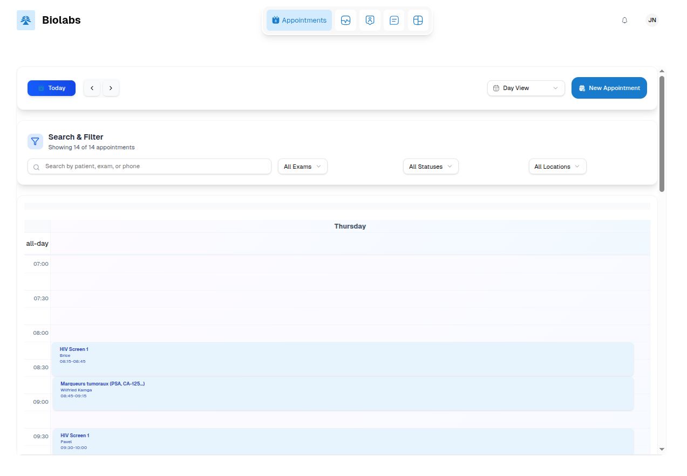
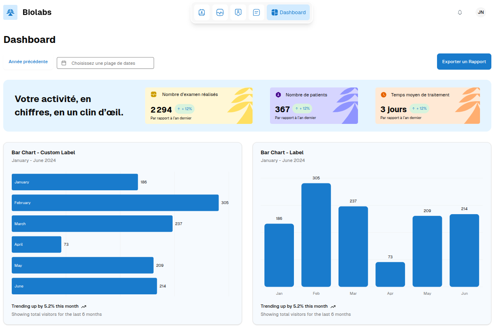

Once logged in, you can access BIOLAB’s main features.
Appointments
Create an appointment: Choose a date and time for a patient.
View appointment list: Displays all previously scheduled appointments.
Exams
View the list of available exams.
View exam details to understand the associated information.
Create a new exam if necessary.
Search for an exam in the list to save time.
Patients
⚠️ This section is sensitive as it contains medical records.
New authentication may be required to secure access.
View a patient’s file to track their medical history.
Create a patient if a new patient needs to be registered.
Start a patient’s exam to track their treatment or medical procedure.
Dashboard
Displays a summary of platform activities.
Shows statistics and metrics to quickly monitor laboratory activity.